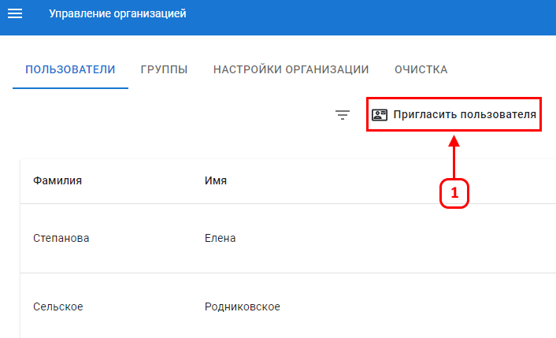

Приглашение пользователя в новую для него организацию
Во вкладке управление организацией доступной для администратора можно пригласить существующего пользователя из другой организации (1)

После нажатия на кнопку (1) необходимо внести E-mail пользователя из другой организации для добавления её в существующую (2)
Нажав кнопку (2) пользователь будет добавлен без прав в новой для него организации